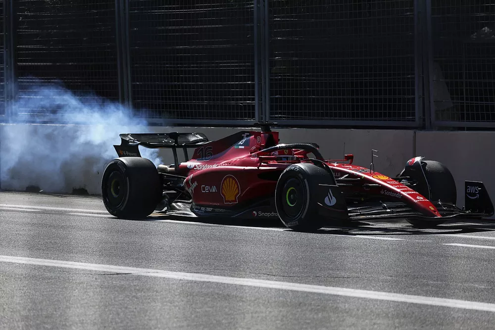
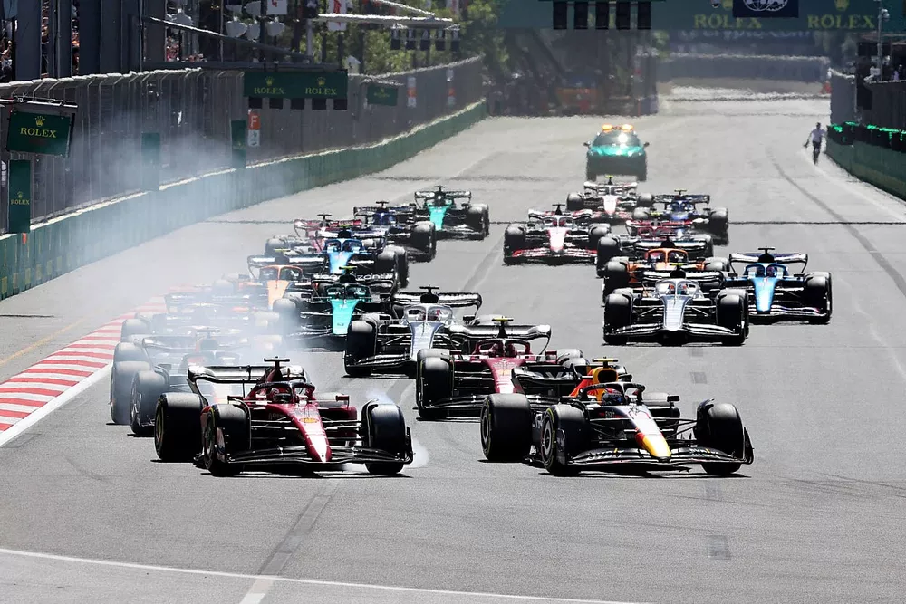
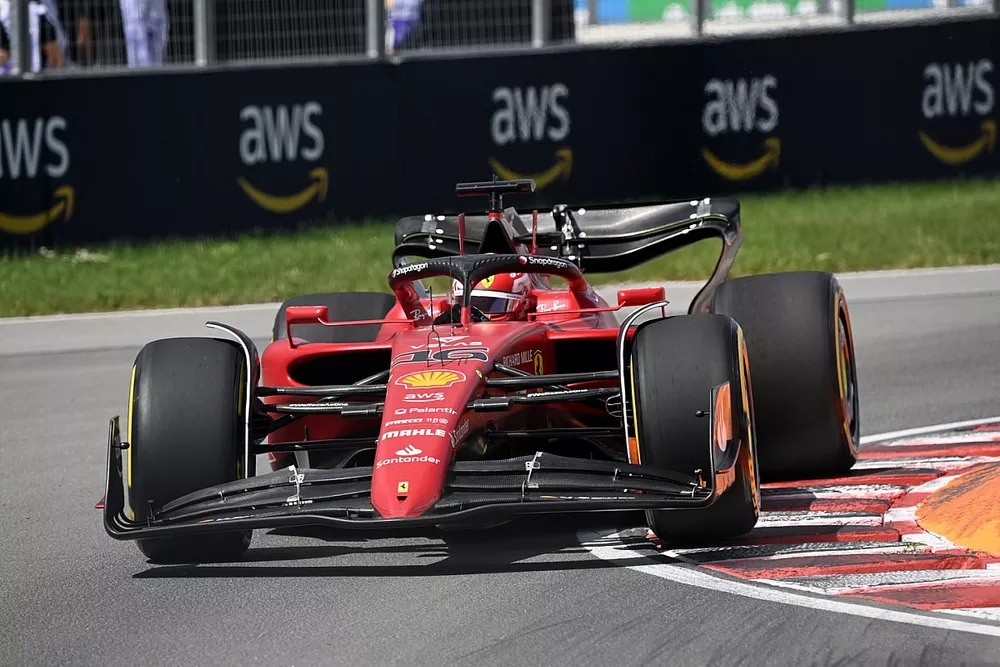
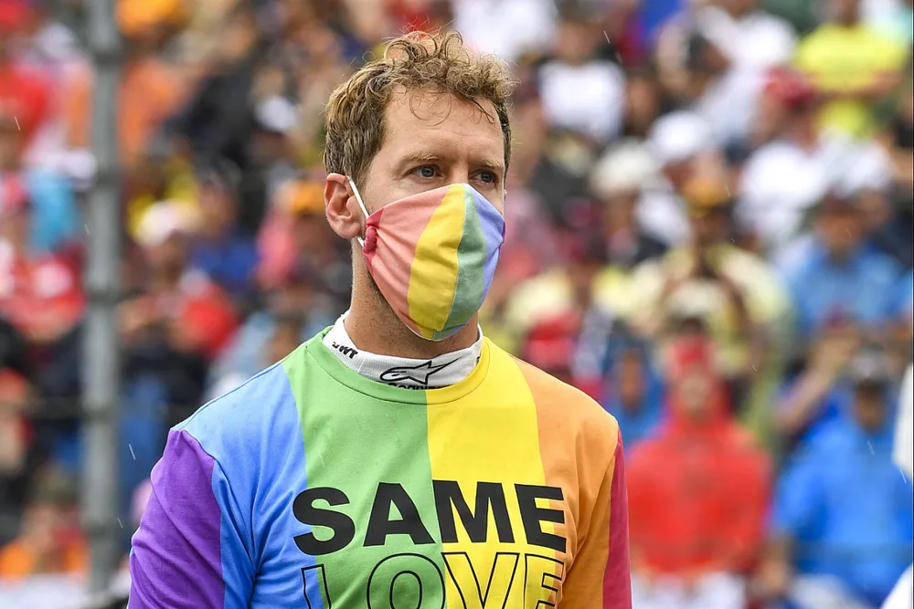
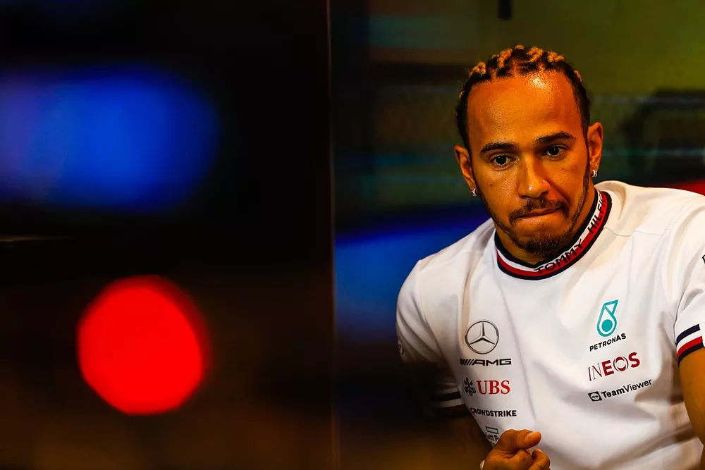
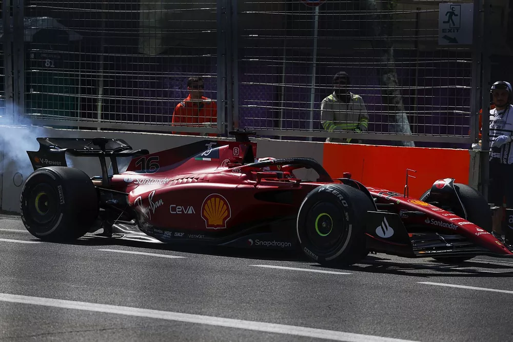
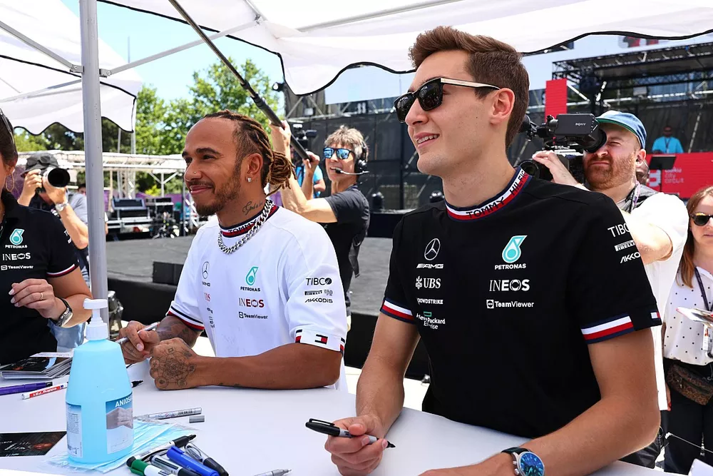
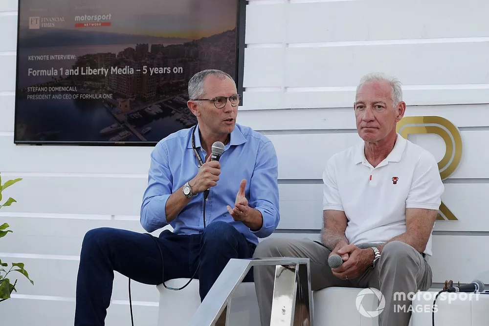

TORQUE
Notícias
(current)
Corridas
Ranking
AoVivo
Fórum
Últimas Notícias
F1:
Williams promete atualização “visivelmente diferente” no carro

F1:
Vai para o lixo? Ferrari diz que motor de Leclerc está "além do reparo".

F1:
Por segurança, FIA adota nova diretiva em relação ao porpoising.

F1:
Leclerc será punido em 10 posições no grid do Canadá.

F1:
Vettel diz que espera categoria esteja pronta para ter piloto homossexual.

F1:
Hamilton diz que tem sofrido “muito mais dores de cabeça” este ano.

F1:
Por ora, Leclerc se livra de punição no Canadá; Tsunoda sai do fundo do grid.

F1:
Veja por que Russell está melhor que Hamilton e como isso impacta a Mercedes

F1:
Domenicali apresenta ideia sobre GP da França acontecer em Nice. Acompanhe;